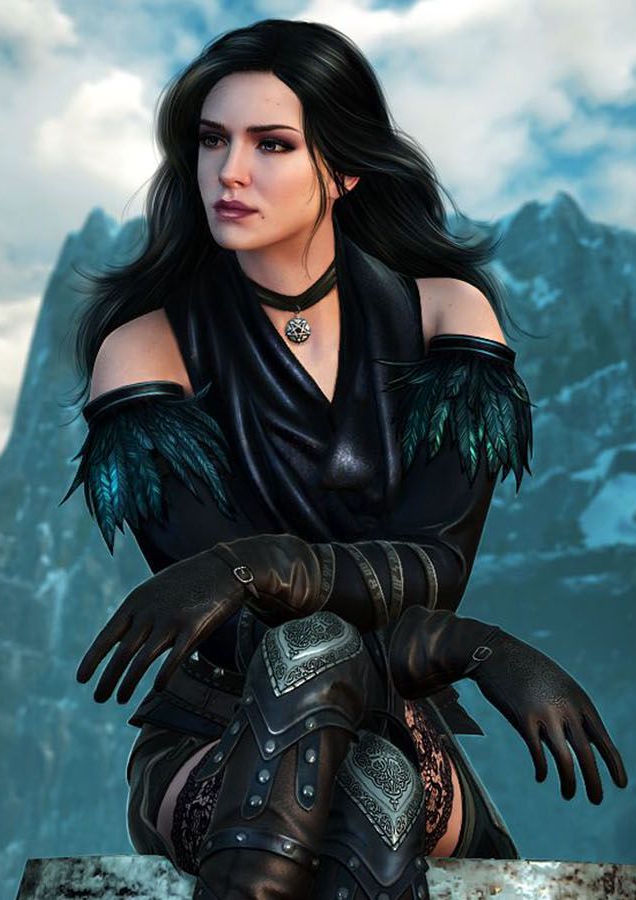
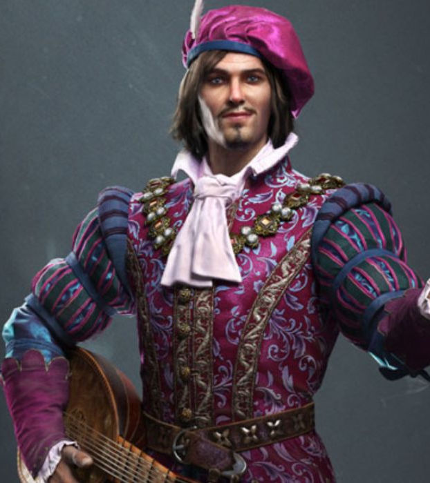
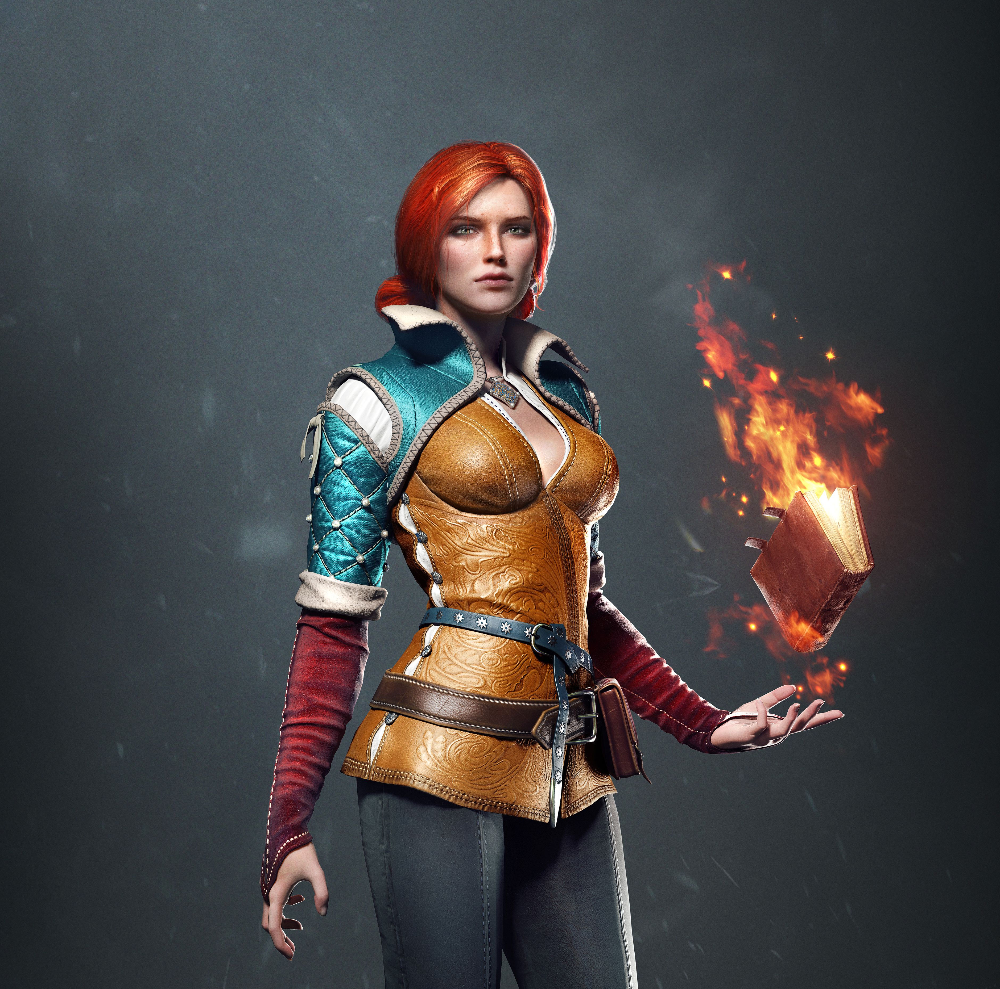

<main>
    <section>
        <div class="about-book">
            <h1>The Witcher: O último desejo</h1>
            <div class="book-content-wrapper">
            
                <div class="book-details">
                    <p><strong>Autor:</strong> Andrzej Sapkowski</p>
                    <p><strong>Gênero:</strong> Fantasia, Ação, Aventura.</p>
                    <p><strong>Resumo:</strong> O ironico, cinico e descrente Geralt de Rivia perambula de povoado em povoado oferecendo seus serviços. Em seu caminho vai deriblar intrigas, escolher o mal menor, negociar preços, alcançar o confim do  mundo e realizar o seu último desejo: assim começam as aventura do bruxo Geralt de Rívia</p>
                </div>
            </div>
        </div>
    
        <h2 class="subtitle">Resenha</h2>
        <p class="text">O Último Desejo é o ponto de partida ideal para a aclamada saga de fantasia The Witcher, de Andrzej Sapkowski. O livro se apresenta como uma coletânea de contos, habilmente interligados por um arco narrativo atual, apresentando o leitor ao cínico e carismático bruxo, Geralt de Rívia.</p>
        <p class="text">Geralt é um caçador de monstros geneticamente modificado, mas a verdadeira magia do livro reside na ambiguidade moral de seu universo. Aqui, nem todos os monstros são maus, e os humanos frequentemente se revelam as criaturas mais terríveis.</p>
        <p class="text">A estrutura em contos (como "O Mal Menor" e "Uma Questão de Preço") é perfeita para introduzir gradualmente as complexidades do mundo e os dilemas éticos enfrentados pelo protagonista. O livro também marca a primeira aparição de personagens cruciais, como o bardo Jaskier e a poderosa feiticeira Yennefer de Vengerberg, cujos encontros são inesquecíveis.</p>
        <p class="text"> Com uma escrita fluida, repleta de ironia e diálogos afiados, Sapkowski subverte contos de fadas clássicos com uma visão sombria e adulta. É uma leitura essencial para fãs de fantasia medieval que buscam ação, crítica social e um protagonista inesquecível.</p>

        <h2 class="subtitle">Personagens</h2>

        <section class="card-section resenha-cards">

            <div class="flip-card">
                    <div class="flip-card-front">
                        
                        <h3>Geralt</h3>
                    </div>
            </div>

            <div class="flip-card">
                    <div class="flip-card-front">
                        
                        <h3>Yennefer</h3>
                    </div>
            </div>

            <div class="flip-card">
                    <div class="flip-card-front">
                        
                        <h3>Jaskier</h3>
                    </div>
            </div>

            <div class="flip-card">
                    <div class="flip-card-front">
                        
                        <h3>Triss</h3>
                    </div>
            </div>

        </section>

    </section>

</main>